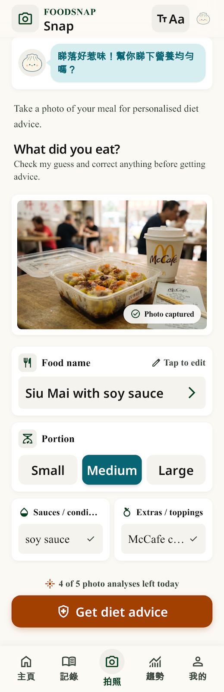
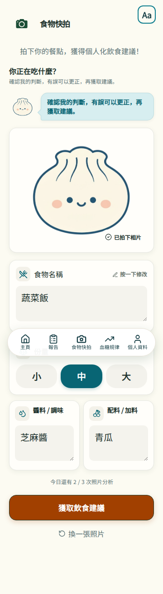
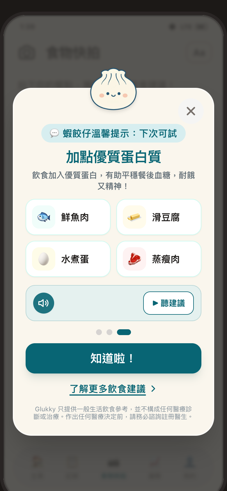
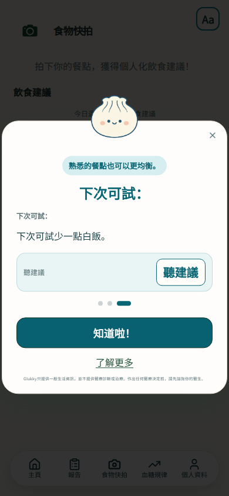
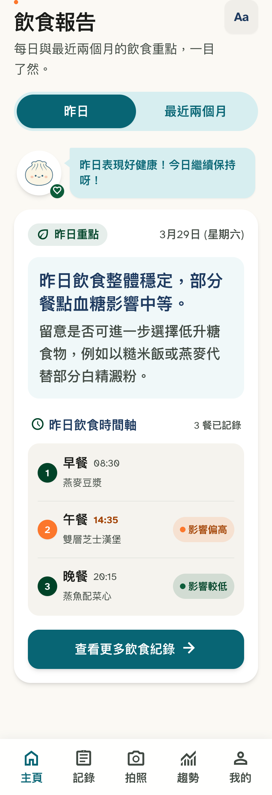
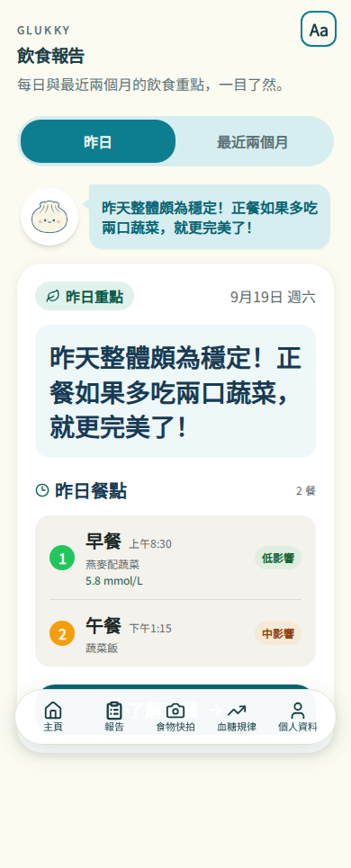
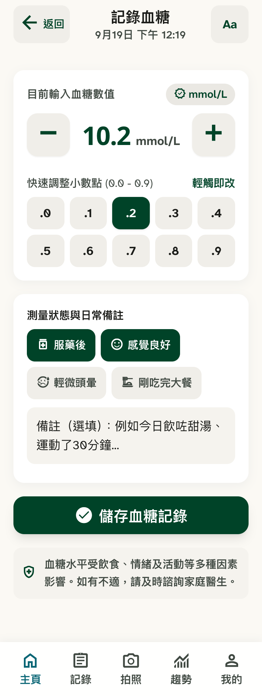
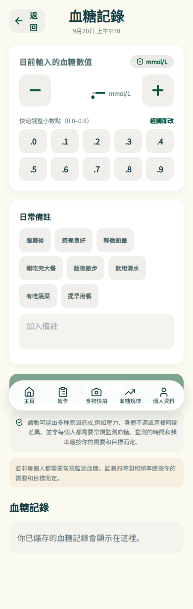

FoodSnap review · 360 px paired cards


FoodSnap advice popup


Daily report


HStix entry


Controlled Playwright data. Final Traditional Chinese captures use the local Noto CJK font and wait for document.fonts.ready.







